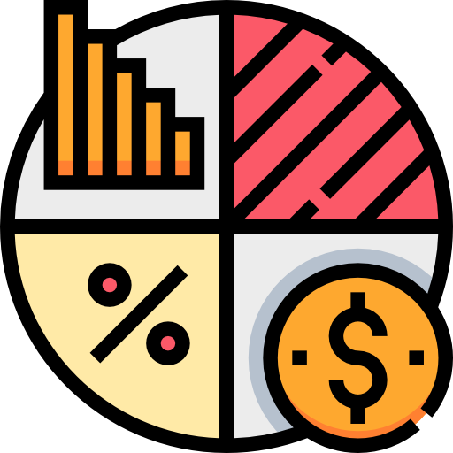

Projects I've done so far ✨
 ThoughtNest - A Full-Stack Blog Application
ThoughtNest - A Full-Stack Blog Application
A platform where users can write, publish, and manage articles with rich text and images. Built with Spring Boot, React, and PostgreSQL, and deployed on Google Cloud Run and Vercel.
Know More → Pepsico Advanced Software Engineering Job Simulation
Built a responsive dashboard to analyze company metrics using SQL, Tableau, and Excel as part of the PwC job simulation.
Know More →
 HPE Software Engineering Job Simulation
HPE Software Engineering Job Simulation
Built a production-ready RESTful web service using Java Spring Boot to manage employee data with full CRUD operations. Implemented unit tests, Swagger documentation, and deployed the API securely on Google Cloud Run.
Know More →
 My Portfolio
My Portfolio
A custom-built, fully responsive developer portfolio created using only HTML and CSS, with no templates or frameworks. It showcases my projects, skills, and personality, with a functional contact form and automated GitHub Pages deployment.
Know More →AWS Solution Architect Job Simulation
Got it! Here's a short 2-line project-style description: > A cloud architecture design simulation where I acted as an AWS Solutions Architect for a growing startup facing performance and scalability challenges. > The project involved proposing a reliable, auto-scaling hosting solution using key AWS services and presenting it with clear technical and cost justifications.
Know More →
 Walmart Advanced Software Engineering Job Simulation
Walmart Advanced Software Engineering Job Simulation
Yes — thank you for that clarification. Here's a more **accurate and true-to-task** 2-line description of the **Walmart Advanced Software Engineering Job Simulation**: > A simulation where I solved four technical tasks across different Walmart teams, including implementing a custom Power-of-Two Max Heap in Java and designing a dynamic data processor using UML. > Also created a relational database schema for pet products and wrote a Python script to clean and combine multi-source shipping data into a SQLite database.
Know More →